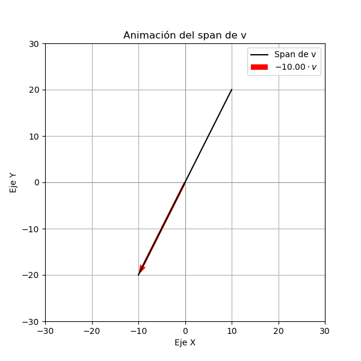
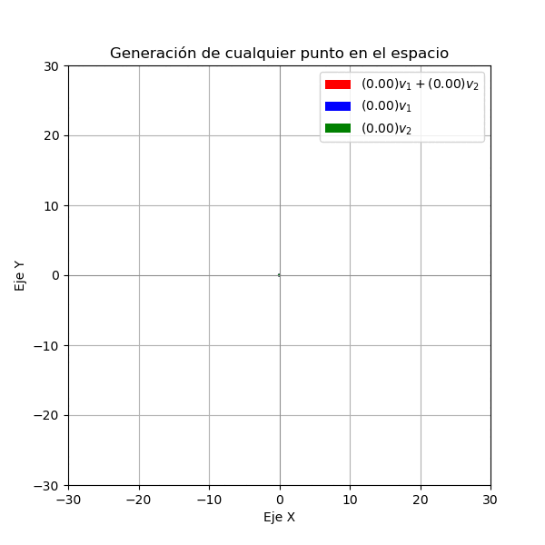

Subespacio de \(\mathbb{R}²\)#
Un subespacio de \(\mathbb{R}^2\) es un conjunto de vectores que cumple con las siguientes propiedades:
El vector cero está en el subespacio.
El subespacio es cerrado bajo la suma de vectores.
El subespacio es cerrado bajo la multiplicación por un escalar.
Ejemplo#
El conjunto de todos los vectores que estan contenidos en una recta que pasa por el origen es un subespacio de \(\mathbb{R}^2\). Esto se debe a que la recta cumple con las tres propiedades mencionadas anteriormente. ¿cómo podemos mostrar esto?
Ejemplo 2#
El vector cero es un subespacio. ¿Por qué?
Combinación lineal#
La combinación lineal es una operación entre un conjunto de vectores, por ejemplo si tenemos el conjunto de vectores \(W=\{\mathbf{v}_1,\mathbf{v}_2,\mathbf{v}_3\}\) no nulos, se puede decir que un vector \(\mathbf{w}\) es una combinación lineal de los vectores de \(W\) si se puede expresar como
donde \(\alpha_1, \alpha_2, \alpha_3\) son números reales. Ademas, el conjunto generado por todas las combinaciones lineales de los vectores de \(W\) se llama el espacio generado por \(W\) y se denota por \(Span(W)\).
Ejemplo#
Vamos a estudiar el conjunto generado por el vector \(\mathbf{v} = (1, 2)\) en \(\mathbb{R}^2\). Lo primero que vamos a estudiar es el conjunto de todas las combinaciones lineales de \(\mathbf{v}\), es decir, el conjunto de todos los vectores que se pueden obtener multiplicando \(\mathbf{v}\) por un número real. Para ello vamos a graficar el vector \(\mathbf{v}\) y luego multiplicamos a este vector por un número real \(c\) y graficamos el vector resultante. Como lo vemos en la siguiente figura el conjunto de todas las combinaciones lineales de \(\mathbf{v}\) es una recta de color negro que pasa por el origen y tiene dirección \(\mathbf{v}\).
import matplotlib.pyplot as plt
import numpy as np
import ipywidgets as widgets
from ipywidgets import interact
# Vector fijo
u = np.array([1, 2])
def plot_vector(scale):
#v = np.array([scale, scale]) # vector cambiante
result = u * scale # multiplicación componente a componente
plt.figure(figsize=(5,5))
ax = plt.gca()
ax.set_xlim(-10, 10)
ax.set_ylim(-10, 10)
ax.axhline(0, color='gray', linewidth=1)
ax.axvline(0, color='gray', linewidth=1)
# Dibujar vectores
plt.quiver(0,0, u[0], u[1], angles='xy', scale_units='xy', scale=1, color="blue", label="u = (1,2)")
#plt.quiver(0,0, v[0], v[1], angles='xy', scale_units='xy', scale=1, color="green", label=f"v = ({scale},{scale})")
plt.quiver(0,0, result[0], result[1], angles='xy', scale_units='xy', scale=1, color="red", label=f"u * v = {tuple(result)}")
plt.legend()
plt.grid(True)
plt.show()
# Crear el control interactivo
interact(plot_vector, scale=widgets.FloatSlider(min=-5, max=5, step=0.5, value=1))
<function __main__.plot_vector(scale)>

Ejemplo 2#
Vamos a estudiar si el vector \(\mathbf{w} = (10, 5)\) es una combinación lineal del vector \(\mathbf{v}_1 = (1, 2)\), Note que el vector
puesto que
De esta forma podemos decir que \(\mathbf{w}\) es una combinación lineal de \(\mathbf{v}_1\). Además podemos ver que \(\mathbf{w}\in Span(\mathbf{v}_1)\).
Aquí nos surgen varias preguntas que gráficamente podríamos resolver como
¿Si \(\mathbf{w},\mathbf{v}_1\) son paralelos y vectores de \(\mathbb{R}^2\), estos formaran el mismo espacio generado?
¿El vector \(\mathbf{z}=(5,2)\) también es una combinación lineal de \(\mathbf{v}_1=(1,2)\)?
Ahora supongamos que tenemos dos vectores no nulos en \(\mathbb{R}^2\), llamados \(\mathbf{v}_1=(2,1)\) y \(\mathbf{v}_2=(1,2)\). Vamos a estudiar el conjunto de todas las combinaciones lineales de estos dos vectores. Para ello vamos a graficar los vectores \(\mathbf{v}_1\) y \(\mathbf{v}_2\) y luego multiplicamos a estos vectores por dos números reales \(c_1\) y \(c_2\) y graficamos el vector resultante. Como lo vemos en la siguiente figura el conjunto de todas las combinaciones lineales de \(\mathbf{v}_1\) y \(\mathbf{v}_2\) es un plano de color
{width=50%}
Note que en este caso podemos ver que el espacio generado por todos los vectores es \(\mathbb{R}^2\).
Definición: Un conjunto de vectores \(W=\{\mathbf{v}_1,\mathbf{v}_2,\ldots,\mathbf{v}_n\}\) en \(\mathbb{R}^n\) es linealmente independiente si la única combinación lineal de los vectores de \(W\) que da como resultado el vector cero es la combinación lineal trivial, es decir, si
entonces \(\alpha_1 = \alpha_2 = \ldots = \alpha_n = 0\). Si un conjunto de vectores no es linealmente independiente, se dice que es linealmente dependiente.
Ejemplo#
Note que los vectores \(\mathbf{v}_1=(1,1)\) y \(\mathbf{v}_2=(-1,1)\) son linealmente independientes, ya que la única combinación lineal de estos vectores que da como resultado el vector cero es la combinación lineal trivial. Es decir, si \(\alpha_1 \mathbf{v}_1 + \alpha_2 \mathbf{v}_2 = \mathbf{0}\), entonces \(\alpha_1 = \alpha_2 = 0\). ¿Por qué?
Definición
Un conjunto de vectores \(W=\{\mathbf{v}_1,\mathbf{v}_2,\ldots,\mathbf{v}_n\}\) en \(\mathbb{R}^2\) es una base si cumple las siguientes dos condiciones:
Los elementos de \(W\) son linealmente independientes.
\(Span(W)=\mathbb{R}^2\). Es decir, cualquier vector en \(\mathbb{R}^2\) se puede expresar como una combinación lineal de los vectores de \(W\).